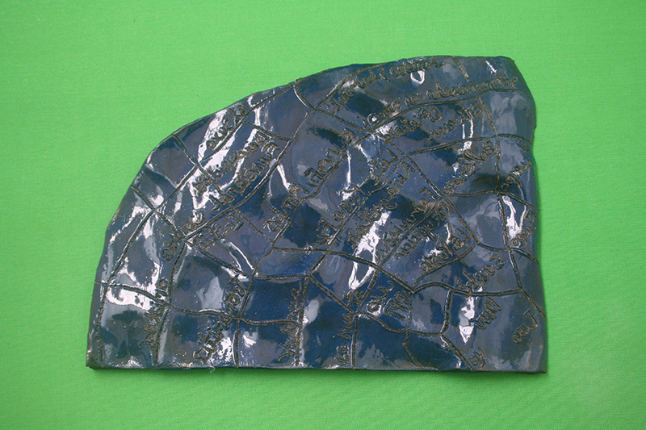
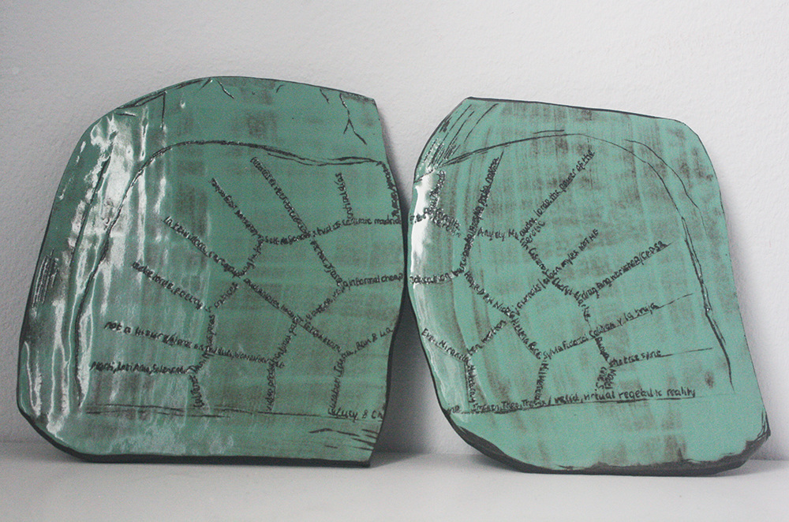
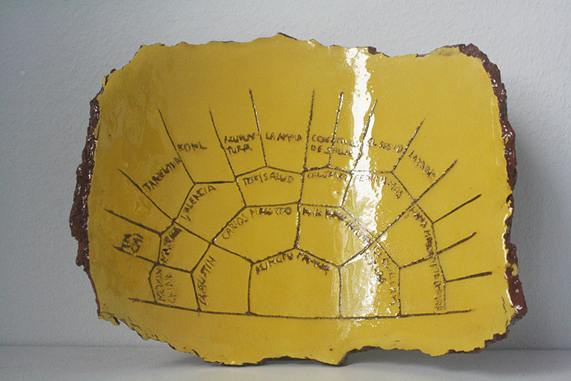
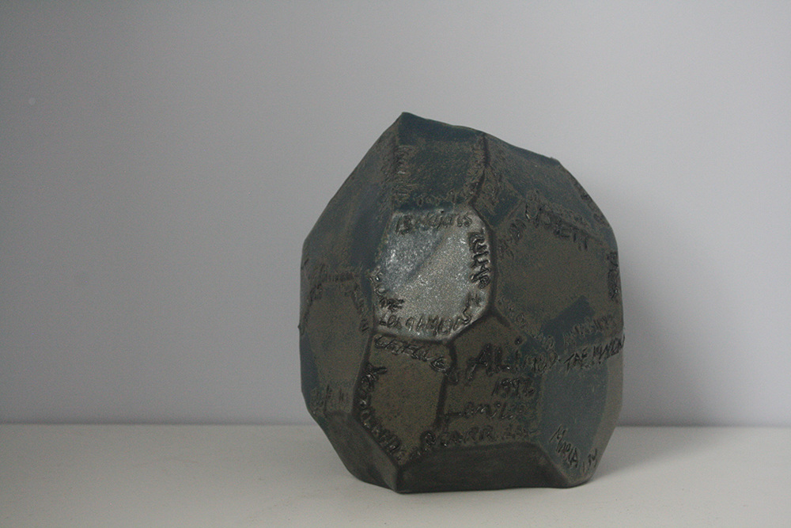

Networks of Care=Critique
[ceramics and browser work, 2018-ongoing]

Where most online activity distracts & forgets us, or remembers us in ways we do not always consent to, this drawing tool reclaims the interface as a site of memory-making.
Through conversation (virtual or in person) I guide a memory exercise: think of the diagram like a rainbow, the center is your first 10 years; 2nd semi-circle is ages 10-20; 3rd is 20-30 etc. depending on how old you are. Using the mouse pad note the forms of emotional, intellectual, physical or spiritual care=critique that has been important to you over time: this could be family, teachers, music, poetry, party, protest etc. Perhaps patterns emerge. Press the s key when finished. I make a ceramic inscription of the network that belongs to each person.
Through conversation (virtual or in person) I guide a memory exercise: think of the diagram like a rainbow, the center is your first 10 years; 2nd semi-circle is ages 10-20; 3rd is 20-30 etc. depending on how old you are. Using the mouse pad note the forms of emotional, intellectual, physical or spiritual care=critique that has been important to you over time: this could be family, teachers, music, poetry, party, protest etc. Perhaps patterns emerge. Press the s key when finished. I make a ceramic inscription of the network that belongs to each person.
Project link
Exhibitions "The Love Ethic", p5.js showcase, curated by Katie Chaan, 2021. "Brilliant Vibrating Interface", a software-queer-poetry-electronic-lit anthology, edited by SPAMZINE, Glasgow, 2023.





